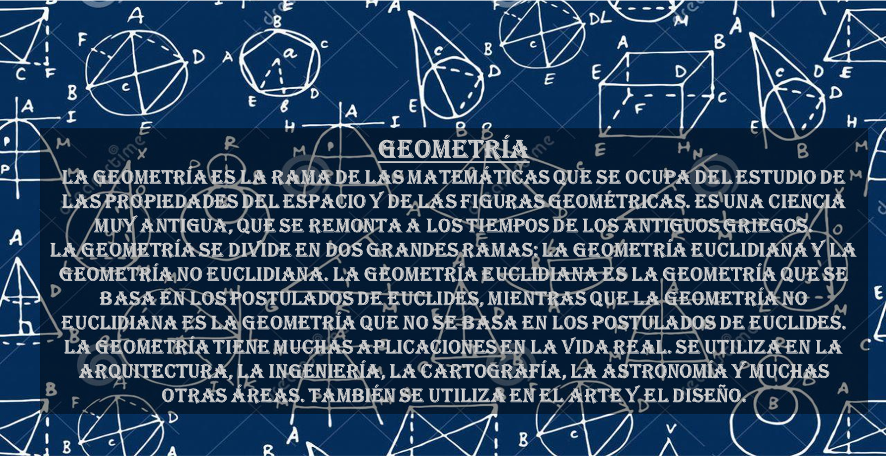
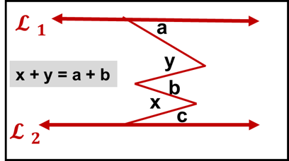

ÁLGEBRA
GEOMETRÍA
Conceptos básicos
ángulos
cuadriláteros
área en triángulos
Trapecio
Teorema de ceviana
Líneas notables
bisectriz
mediana
mediatriz
relaciones métricas
Triángulo
Circunferencia
Teoremas
Incentro___
Mediana___
Thales___
Heron___
Pilot___
Proyección___
Tolomeo___
Menelao___
Otros___
Polígonos
Polígonos inscritos
Geometría espacial
Ángulo diedro
Ángulos triedro
Poliedro
Paralelopípedo
Tetraedro
Hexaedro
Octaedro
Dodecaedro
Icosaedro
sólidos geométricos
Prisma_____
Pirámide_____
Cono _____
Cilindro _____
Esfera_____
TRIGONOMETRÍA
FÍSICA
QUÍMICA

CONTENIDO
Ángulos
Cuadriláteros
Área de triángulos
Trapecio
Teorema de ceviana
Línea notable: Bisectriz
Línea notable: Mediana
Línea notable: Mediatriz
Relaciones métricas en el triángulo
Relaciones métricas en la circunferencia
Teorema de Thales
Teorema de Herón
Teorema de Pilot
Teorema de Menelao
Teorema de Tolomeo
Teorema de proyecciones
Polígono: Paralelopípedo
Polígonos inscritos
Geometría espacial: Conceptos, postulados y determinación de plano
Geometría espacial: proyección ortogonal
Geometría espacial: Teorema de las tres perpendiculares
Ángulo diedro
Ángulos triedro
Poliedros regulares: Tetraedro
Poliedros regulares: Hexaedro
Poliedros regulares: Octaedro
Poliedros regulares: Dodecaedro
Poliedros regulares: Icosaedro
Poliedros regulares conjugados
Sólido: Prisma
Sólido: Pirámide
Sólido: Cono
Sólido: Cilindro
Sólido: Esfera
CONCEPTOS BÁSICOS
ÁNGULOS

CUADRILÁTEROS
ÁREA DE TRIÁNGULO
-TRAPECIO
TEOREMA DE CEVIANAS
Son segmentos de recta que une el vértice de un triángulo con el lado opuesto a este. Hay algunos teoremas.
LINEAS NOTABLES
BISECTRIZ
Es la ceviana con origen en el vértice del ángulo y que lo divide en dos ángulos de igual medida.
THALES + BISECTRIZ
MEDIANA
Es la ceviana que une un vértice con el punto medio del lado opuesto.
MEDIATRIZ
Es una ceviana perpendicular a un lado del triángulo, que pasa por el punto medio de dicho lado.
RELACIONES MÉTRICAS
-RELACIONES MÉTRICAS EN TRIÁNGULO RECTÁNGULO
-RELACIONES MÉTRICAS EN LA CIRCUNFERENCIA
==>TEORÍA DE CUERDAS
==>TEORÍA SECANTE
==>TEORÍA TANGENTE
==>UNO MÁS :D
TEOREMA DEL INCENTRO
TEOREMA DE LA MEDIANA
TEOREMA DE THALES
TEOREMA DE HERÓN
TEOREMA DE PILOT
TEOREMA DE LAS PROYECCIONES
TEOREMA DE TOLOMEO
TEOREMA DE MENELAO
OTRO
POLÍGONOS
Polígonos inscritos
Son todos los polígonos regulares que pueden entrar en una circunferencia de tal manera que sus vertices coincidan con esta circunferencia.
.
.
POLÍGONOS REGULARES INSCRITOS NOTABLES
GEOMETRÍA ESPACIAL I
CAMPO DE ESTUDIO:
La geometría del espacio tiene por objeto de estudio las figuras geométricas contenidas en el espacio geométrico, es la generalización de la geometría plana.
POSTULADOS FUNDAMENTALES:
-Existen infinitas rectas e infinitos planos.
-Por cada punto pasan infinitas rectas.
-Si dos planos se intersecan, entonces su intersección es una recta.
-Todas las rectas y planos son conjuntos de puntos.
-Existen infinitos puntos que no pertenecen a un plano.
-Si dos o más puntos de una recta pertenecen a un plano, entonces todos los puntos de la recta pertenecen al plano.
DETERMINACIÓN DE UN PLANO
GEOMETRÍA ESPACIAL II
TEOREMA DE LAS TRES PERPENDICULARES:
Si por el pie de una recta perpendicular a un plano se traza una recta perpendicular a otra recta contenida en el plano, entonces toda recta que contiene al pie de la segunda perpendicular ese interseca a la primera, es perpendicular a la recta contenida en el plano.
PROYECCIONES ORTOGONALES
ÁNGULO DIEDRO
DEFINICIÓN:
Se denomina ángulo diedro o simplemente diedro, a la unión de una recta y los dos semiplanos no coplanares, determinados por la recta.
NOTACIÓN DE DIEDRO:
Diedro P-AB-Q
diedro AB
ELEMENTOS:
Aristas: La recta que determina los semiplanos
en la figura: AB
Cara: Cada uno de los semiplanos, unido con la arista
en la figura: P y Q
NOTACIÓN DEL ÁNGULO DIEDRO:
x < 90 <=> el diedro es agudo
x = 90 <=> el diedro es recto
x > 90 <=> el diedro es obtuso
ÁNGULO TRIEDRO
DEFINICIÓN:
Es un ángulo poliedro que tiene 3 caras
ELEMENTOS:
1. Vértice: O
2. Caras: O
3. Diedros: Son los ángulos diedros formados por dos caras adyacentes.
NOTACIÓN:
Ángulo triedro O-ABC
0° < a + b + c < 360°
POLIEDROS
-PARALELOPIPEDO RECTANGULAR
-POLIEDROS REGULARES
=>TETRAEDRO:
4 caras, 6 aristas y 4 vertices
=>HEXAEDRO:
6 caras, 12 aristas y 8 vertices
=>OCTAEDRO:
8 caras, 12 aristas y 6 vertices
=>DODECAEDRO
=>ICOSAEDRO
Poliedros conjugados
Son un dúo de polígonos cuyo números de aristas es el mismo y el número de caras del primero es igual al número de vertices del otro y viceversa.
-El tetraedro es polígono conjugado con sí mismo
-El hexaedro es polígono conjugado con el octaedro
-El dodecaedro es polígono conjugado con el icosaedro
SÓLIDOS GEOMÉTRICOS
-PRISMA
-PIRÁMIDE
-CONO
-CILINDRO
-ESFERA